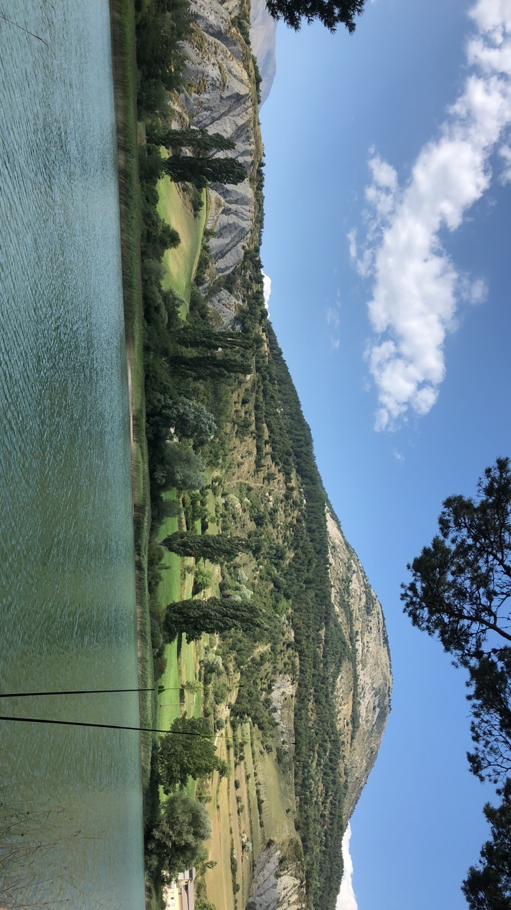
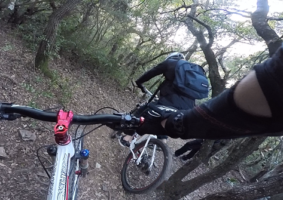
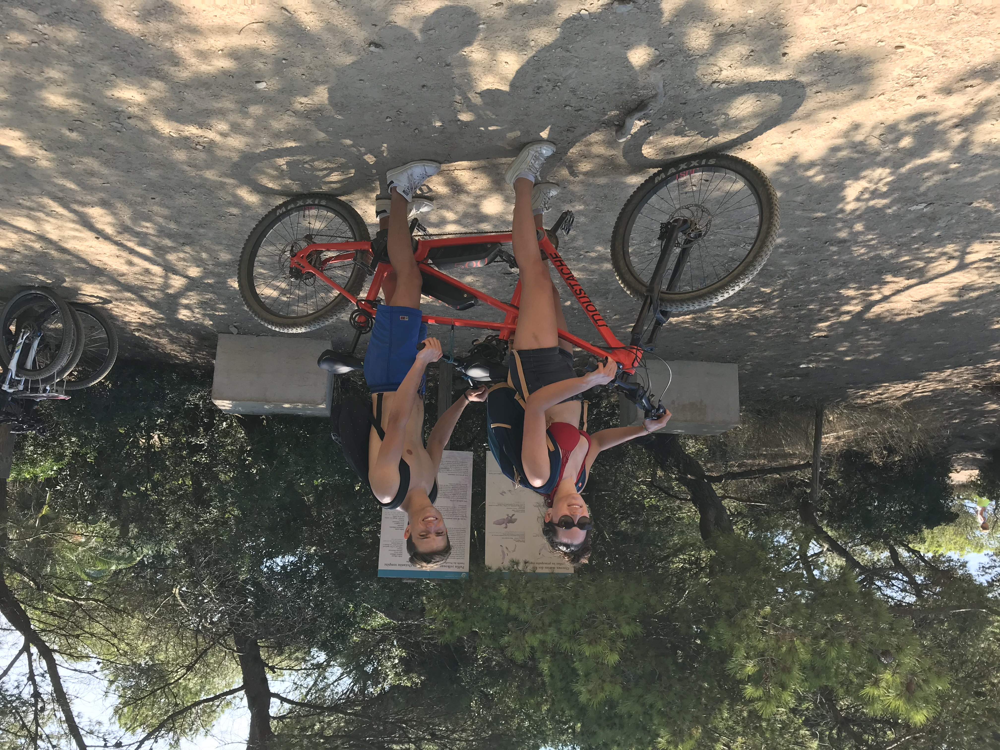

Vacance à la montagneLes vacances à la montagne en été, c'est l'occasion de contempler de magnifiques paysages que l'on est plus habitué à voir recouverts d'un blanc manteau. Bien sûr, de nombreuses autres activités sont également proposées dans les stations en été : VTT, rafting, parapente... |
 |
|  |
VTT au Val d'AllosOn monte avec les télésièges et on descent à tout vitesse sur les pistes de ski. De nombreux aménagements et installations ont été crée pour découvrir de nouvelles sensations en VTT de descente. Le VTT de descente est une discipline sportive qui consiste à descendre, à l'aide d'un VTT, des pistes, spécialement conçues, en montagne avec un profil exclusivement descendant. Le pilote doit faire preuve d'engagement, de technicité et posséder un sens aiguisé du pilotage pour affronter les racines, dévers, bosses, sauts et autres obstacles naturels rencontrés lors d'une descente. |
Tendem électrique à PorquerollesCe vélo électrique à 2 moteurs nous à permis de faire tout le tour de l'île de Porquerolles. Notre vitesse de pointe était de 50 kilométres/heure ! A 15mn à peine du continent, Porquerolles fait 7,5 km de long sur 3km de large, ses paysages aussi variés qu’insolites et sont parfaits pour une exploration à vélo. |
 |